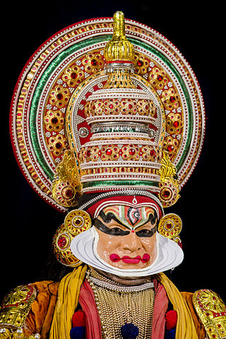

Kerala has been a major spice exporter since 3000 BC and is referred to as the "Garden of Spices" or as the "Spice Garden of India".
UNIQUE IN KERALA-
There is the tradition of matrilineal inheritance in Kerala, where the mother is the head of the household. As a result, women in Kerala have had a much higher standing and influence in the society. This was common among certain influential castes and is a factor in the value placed on daughters. Kerala's sex ratio of 1.084 is higher than that of the rest of India and is the only state where women outnumber men.
The culture of Kerala is composite and cosmopolitan in nature and it is an integral part of Indian culture. It is synthesis of Aryan and Dravidian cultures,defined by its antiquity and the organic continuity sustained by the Malayali people.
Kerala is home to a number of performance arts. These include five classical dance forms: Kathakali, Mohiniyattam, Koodiyattom, Thullal and Krishnanattam, which originated and developed in the temple theatres during the classical period under the patronage of royal houses.
A Kathakali Dancer

A Mohiniyattam Dancer

BACK